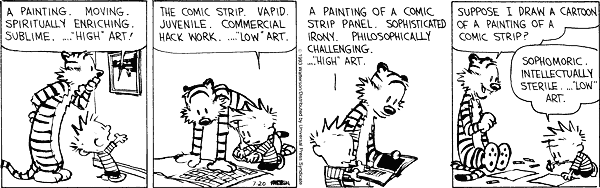

![[Everything Shii Knows]](../mediawiki/skins/common/images/wiki.png)
{kind=link}
{kind=link}

No higher resolution available.
Ch930720.gif (600 × 188 pixels, file size: 20 KB, MIME type: image/gif)
No higher resolution available.
Ch930720.gif (600 × 188 pixels, file size: 20 KB, MIME type: image/gif)
Calvin: A painting. Moving. Spiritually enriching. Sublime. "High" art!
The comic strip. Vapid. Juvenile. Commercial hack work. "Low" art.
A painting of a comic strip panel. Sophisticated irony. Philosophically challenging. "High" art.
Hobbes: Suppose I draw a cartoon of a painting of a comic strip?
Calvin: Sophomoric, intellectually sterile. "Low" art.
File history
Click on a date/time to view the file as it appeared at that time.
(Latest | Earliest) View (newer 50) (older 50) (20 | 50 | 100 | 250 | 500){kind=link}
{kind=link}
{kind=link}
{kind=link}
{kind=link}
| Date/Time | Thumbnail | Dimensions | User | Comment | |
|---|---|---|---|---|---|
| current | 19:16, 23 February 2008 | 600×188 (20 KB) | Shii (Talk | contribs) | ( Calvin: A painting. Moving. Spiritually enriching. Sublime. "High" art! The comic strip. Vapid. Juvenile. Commercial hack work. "Low" art. A painting of a comic strip panel. Sophisticated irony. Philosophically challenging. "High" ) |
- Edit this file using an external application (See the setup instructions for more information)
{kind=link}
File links
The following page links to this file:
{kind=link}
{kind=link}